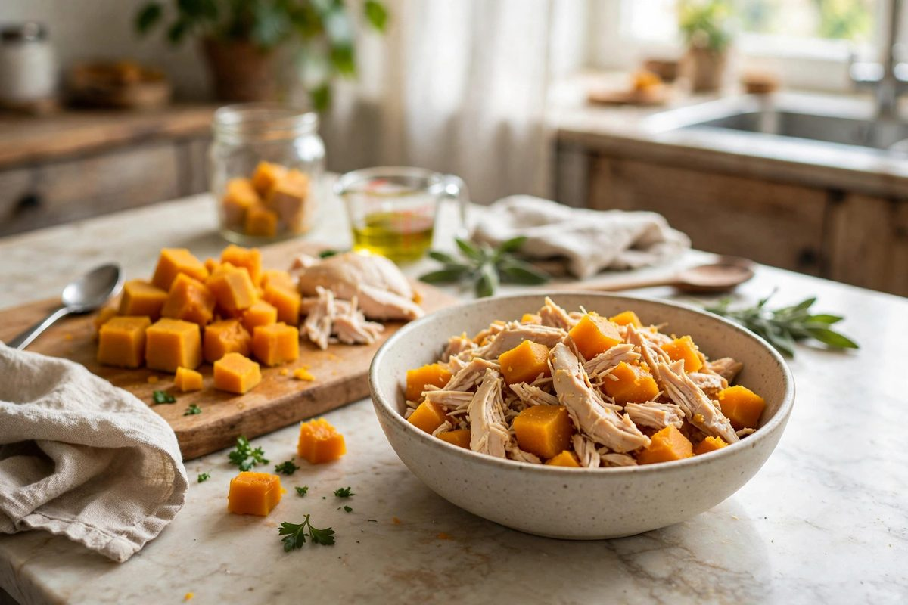

Home › Guides
Homemade Cat Food: How to Cook for Your Cat Safely

Cooking for your cat sounds like the kindest thing you can do. You choose every ingredient, you know exactly what goes in the bowl, and you can tailor the food to a cat with allergies or a sensitive stomach. It can work well, but only if the recipe is complete. A cat's nutritional needs are precise, and a home-cooked diet that misses one nutrient can cause serious harm over months.
Why balance is hard
Cats need specific nutrients in specific amounts, including taurine, arachidonic acid, vitamin A, vitamin D, and calcium. These are easy to miss in a home kitchen. A diet of plain cooked chicken and rice, for example, is low in calcium, taurine, and several vitamins. A cat fed that way for months can develop bone disease, heart problems, or eye problems.
Commercial foods solve this by adding a vitamin and mineral premix. Home cooks must do the same. That is why vets insist that any homemade diet should be built from a recipe designed or approved by a veterinary nutritionist, not from a blog post or a guess.
A safe starting recipe
A typical balanced homemade recipe might include cooked chicken thigh meat, a small amount of cooked liver, a calcium source such as ground eggshell or a supplement, fish oil, taurine, and a vitamin and mineral premix made for cats. The exact amounts matter and should come from a nutritionist, because they depend on the cat's weight and health.
Cook all meat thoroughly and let it cool before serving. Do not add onion, garlic, salt, or seasoning. Serve the food at room temperature, store leftovers in the fridge for no more than two days, and freeze portions for longer storage. Keep fresh water available at all times.
Foods that are safe, and foods that are not
Plain cooked chicken, turkey, beef, and white fish are good protein sources. Small amounts of cooked pumpkin, carrot, or green beans can add fibre. Cooked egg is an excellent source of protein. All meat should be boneless, because cooked bones splinter.
Never use onion, garlic, grapes, raisins, chocolate, or xylitol. Avoid raw meat, raw fish, and raw egg white. Do not use stock cubes, sauces, or seasoned leftovers, because they are usually salty and may contain onion or garlic.
When homemade food makes sense
Homemade food is most useful for cats with food allergies, where a single-protein diet helps identify the trigger, or for cats with medical conditions that need a specific diet a vet has prescribed. In these cases the vet or nutritionist will provide the recipe and the supplement plan.
For a healthy cat, a good commercial food is simpler, cheaper, and safer. If you enjoy cooking for your cat, consider making treats or a topper rather than the whole diet. A spoonful of plain cooked chicken on top of a complete food gives the pleasure of home cooking without the risk of an unbalanced diet.
A sample day of homemade food
A balanced homemade day, designed by a veterinary nutritionist, might look like this. Breakfast: cooked chicken thigh, finely chopped, with a measured amount of calcium supplement and a vitamin premix. Dinner: cooked turkey with a small amount of liver, fish oil, and taurine, served at room temperature. Fresh water is available all day, and no treats are given beyond a few pieces of the same food.
The amounts depend on the cat, so this is an example, not a recipe. What matters is the pattern: protein at every meal, supplements measured, not guessed, and no seasoning, onion, or garlic. Store cooked food in the fridge for no more than two days, and freeze portions for the rest of the week.
Frequently Asked Questions
Can I feed my cat only cooked chicken and rice?
No, not long term. That diet lacks calcium, taurine and several vitamins, and it can cause bone and heart problems over time.
Do I need supplements in homemade cat food?
Yes. A vitamin and mineral premix made for cats, plus taurine and a calcium source, are essential. Get the recipe from a veterinary nutritionist.